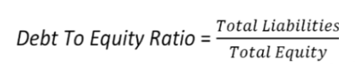

The Debt to Equity (D/E) Ratio is calculated by dividing a company’s total liabilities by its shareholder equity. These numbers are available on the balance sheet of a company’s financial statements. The ratio is used to evaluate a company's financial leverage. The debt/equity ratio is also referred to as a risk or gearing ratio. The formula for calculating the D/E ratio is:
Examples (choose from the list or add a new one):
{% if form %} {% else %}| Year | Total liabilities | Total equity | Debt to equity ratio |
| {{ dter.year }} | {{ dter.total_liabilities }} | {{ dter.total_equity }} | {{ dter.debt_to_equity_ratio }} |